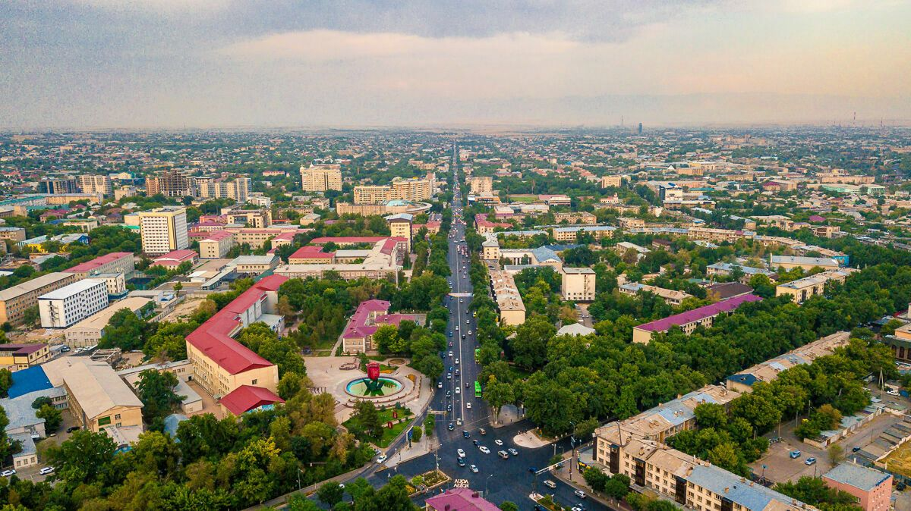

Шымкент — Қазақстандағы республикалық маңызы бар қала, халық саны бойынша елдегі үшінші орында. 2018 жылғы 19 маусымға дейін Оңтүстік Қазақстан облысының орталығы болған. Қазір бұл қалада 1 028 673 адам тұрады (2019). Сонымен қатар Шымкент Қазақстанның негізгі өнеркәсіп, сауда және мәдени орталықтарының бірі болып табылады. Шымкент қаласы ТМД-ның 2020 жылғы мәдени астанасы мәртебесіне ие болды.
ақпарат алынған жер